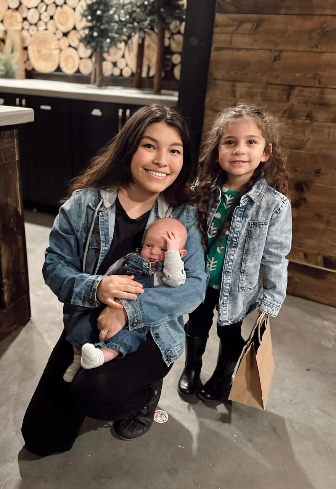
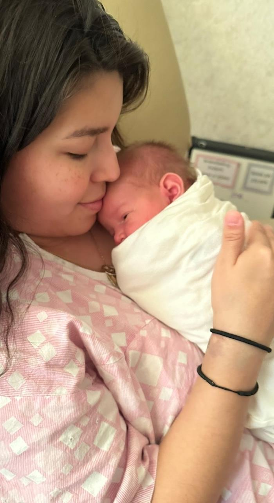

<!-- Jacob Thompson : bioSite FAMILY Page --> 
<!DOCTYPE html>
<html lang="en">
<head>
    <title>Raquel Lopez - Family</title>
    <link href="../main.css" type="text/css" rel="stylesheet"/>
</head>
</html>
<body>
    <div class="sub-border">
        <div class="top-box1" id="blue">
            <a href="about.html">
                <h3><i class="arrow left"></i>About</h3>
            </a>
        </div>
        <div class="top-box2" id="red"><h1>Family</h1></div>
        <div class="top-box3" id="green">
            <a href="hobbies.html">
                <h3>Hobbies<i class="arrow right"></i></h3>
            </a>
        </div>
    </div>
    <div class="sub-container">
        <div class="family-item f-item1">
            
        </div>
        <div class="family-item f-item2">
            <p>
                Raquel comes from a big family, but she hasn’t met many of them since she moved to the U.S 
                when she was three. Here in the U.S, she has her immediate family, her mom, dad, two brothers 
                and 1 older sister. She keeps in touch with her grandmother and aunts that live in Mexico. 
                In just her mother’s side alone, she has 5 aunts and 6 uncles. Raquel has always loved the 
                idea of big family gatherings, being able to share all types of different stories. Raquel 
                fit in great when she met her fiancé's eleven siblings, she loves how united they are as a 
                family and how easygoing they all are.
            </p>
            <p>
                Raquel and her fiancé have 4 kids. Ranging from a four-month-old all the way to an eleven-year-old. 
                She enjoys hearing all the things the kids come up with, especially now that the three-year-old 
                is really showing her bold and funny personality. Raquel loves spending time with her family and 
                doing all the things her parents couldn’t afford while she was growing up. She enjoys seeing the 
                kids' faces light up and it creates an everlasting memory for her. 
            </p>
        </div>
        <div class="family-item f-item3">
            
        </div>
        <div class="family-item f-item4">
            <figure>
                <figcaption>With both her kids.</figcaption>
            </figure>
        </div>
        <div class="family-item f-item5">
            <figure>
                <figcaption>Spending time with her son.</figcaption>
            </figure>
        </div>
        <div class="family-item f-item6">
            <div class="home-button">
                <a href="../index.html">
                    <h3><i class="arrow left"></i>Home</h3>
                </a>
            </div>
        </div> 
    </div>
    <footer>
        <p id="copyright">Copyright 2024 - Thompson</p>        
    </footer>
</body>